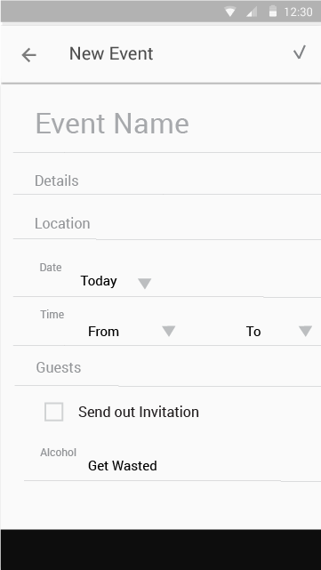
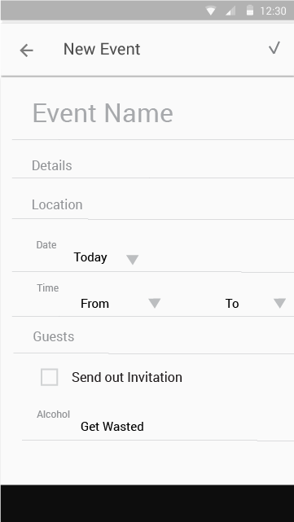
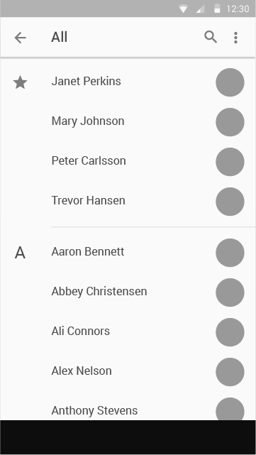
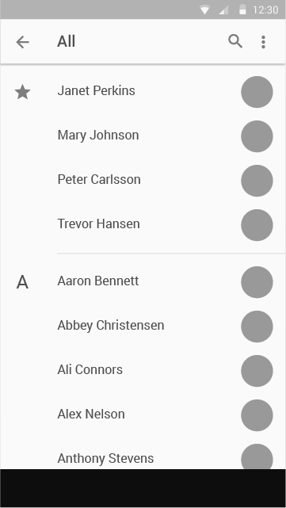

Introduction
Mobile application design project with the goal of optimizing event coordination experience and practicing Material Design.
I love to initiate events and invite friends to try out new stuff. However, it's never easy for me to do event coordination, since nowadays we simply have way too many ways to communicate with each other. Some of my friends would only reply to text, some of them only pay attention to Facebook, others only use certain apps as communication channels. All these different tools have made individual communication so much easier than the early days, but, at the same time, they also have made group communication so much harder. I couldn't help but wonder: how can we make group communication experience as smooth as individual communication and further help with event coordination?
Process
- Define goal and scope of the project.
- Research on user behaviors by interviews and conduct competitor analysis.
- Ideate design options by pen and my Moleskine.
- Build Lo-fi and High-fi Prototypes to demonstrate user flow, UI, interactions and visual treatment.
- Critique and iterate on the design.

The Project Journey
Let's look into the design process in detail!
1. Requirement Gathering Phase
Before diving into the design process, I asked myself this series of questions to clarify the goal and gather requirements.
1. Who are the target users?
As an initial definition, the primary user is event attendees and the secondary user is event hosts. Both of the persona need to be smart phone users, technology friendly, comfortable with communicating with friends on-line and/or social network friendly.
2. What is the goal of the project?
Create an easy to use and intuitive event coordination mobile app that provides great user experience for users.
2. Investigation Phase
Design Question
How does event coordinator mobile application provide great experience for users?
Research Question
- What type of apps do people use nowadays for event coordination?
- What do users like and dislike about it?
- What is the definition of comfortableness for people when dealing with mobile app?
- What makes a good mobile experience?
In order to answer the research questions, I decided to conduct a small size competitor analysis and user research.
Competitor Analysis
a. Google Calendar Web App on iPhone- Good: For people who need to check emails frequently, it's easy to invite people and be invited.
- Bad: The experience seems a little bit off when dealing with the app on mobile device. For example, after replying to an invitation, the page is redirected to desktop version of the site and becomes very difficult to navigate and interact with on a small screen device.
- Good: For facebook users, it's easy to access and use.
- Bad: Hard to invite friends and to be invited for non-facebook users.
User research
Interviews are conducted through phone with two of my friends who fit in the persona defined previously for gaining more insights.
Participant 1- Female 32 years old
- Nexus 5 users
- PHD student in UW majoring in HCDE
- Slightly Anti- social network
- The frequency of hosting events- rarely
- Tools: Facebook, Emails and text messages
- Like about it: I read emails everyday, so emails are very easy to access for me.
- Dislike about it: Facebook is the least favorable tool for me. Since I seldom use it, sometimes I would miss out stuff. Email chains are usually not very well-organized and it can be hard for catching up information quickly.
- Male 25 years old
- iPhone 6 user
- Used to be the President of Stanford Taiwanese Student Association
- The frequency of hosting events- 5 to 10 times per year
- Tools: Facebook, Google hangout and text message
- Like about it: Facebook is my go-to, since it seamless integrates social network/ contacts and event planning for me.
- Dislike: When hosting events, I always fear that I would forget to invite some of my friends. Also, people who are not on faceboook are hard to invite.
Technology Feasibility
Since the goal of the app is to make event planning an unified and comfortable experience, the technology that I decided to go for is a web application with native mobile interactions. By creating web application with native mobile interactions, users don't need to go through the pain of downloading it in order to reply invitations. Instead, users can easily just click into the link and be redirect to the right place with native mobile looks, feel and interactions.
3. Refine project
Refined Goal
Provide an event planning mobile application with the ability of integrating social networks, emails and text message which empowers users to timely catch up with friends' event schedule and also coordinate event with no pain.
Refined Persona
Anita Anti-facebook
"I would love to attend my friends' parties all the time. However, sometime I just can't timely catch up with them, since I'm not a active Facebook user."
- Role: Attendee
- Gender: Female
- Age: 27 years old
- Occupation: Researcher in Tech industry
- Behaviour: Facebook hater
Holly the host
"I love event hosting, but I'm always afraid that I would forget some of my friends when inviting people. I really don't what to make them feel left out. "
- Role: Host
- Gender: Male
- Age: 26 years old
- Occupation: Developer at Microsoft
- Behaviour: Technology friendly
4. Prototyping Phase
Sketches

Low-fi Mockup

 

 


5. Future work
- Revisit the flow and detail of each element/ interaction
- Ask for feedback from other designers
- Take the mockup to have a conversation with potential users
- Iterate through the design
- Plan for developement
- Plan for usability test